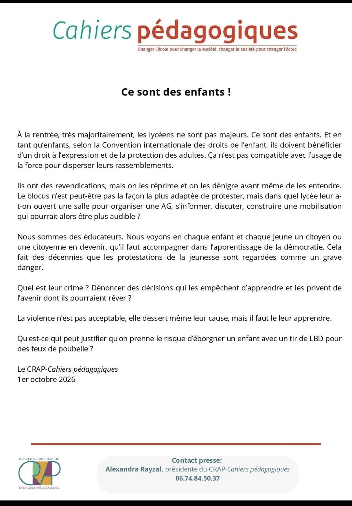

Partage commenté par le PCF 79
Pourquoi nous avons relayé le communiqué du CRAP sur la mobilisation lycéenne
Date indiquée par Facebook · 1 octobre 2026
Texte conservé avec la publication
Communiqué du CRAP (Cercle de recherche et d'action pédagogiques)
Pourquoi on partage ce communiqué du Crap, association française indépendante qui promeut l'éducation nouvelle et édite la revue mensuelle Cahiers pédagogiques ?
Parce qu'il traduit bien, de la part de gens qu'on ne peut pas taxer de gauchistes ni d'agitateurs, l'indignation que suscite dans le pays la "réponse" du gouvernement au mouvement lycéen.
La jeunesse qui se mobilise ne demande pas à être réprimée. Elle demande qu’on lui donne les moyens de construire son avenir et celui du pays.
Repères éditoriaux
Nous avons partagé le communiqué du Cercle de recherche et d’action pédagogiques. Notre publication explique ce choix en défendant une jeunesse qui demande les moyens de construire son avenir.

Sources
Archive rouge · export Facebook · AR-0002-FB-00668